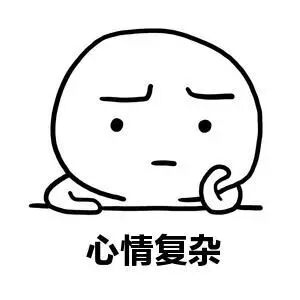
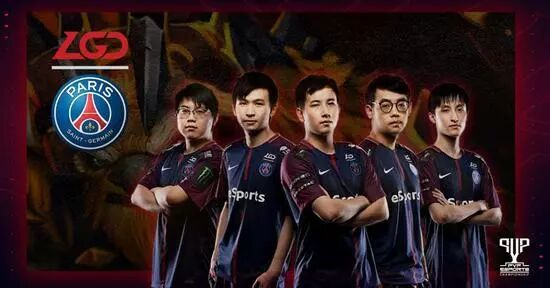
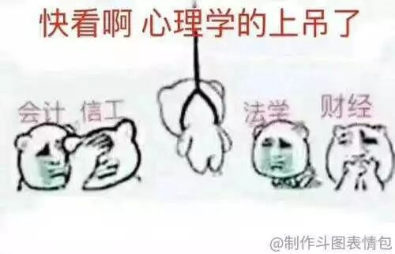
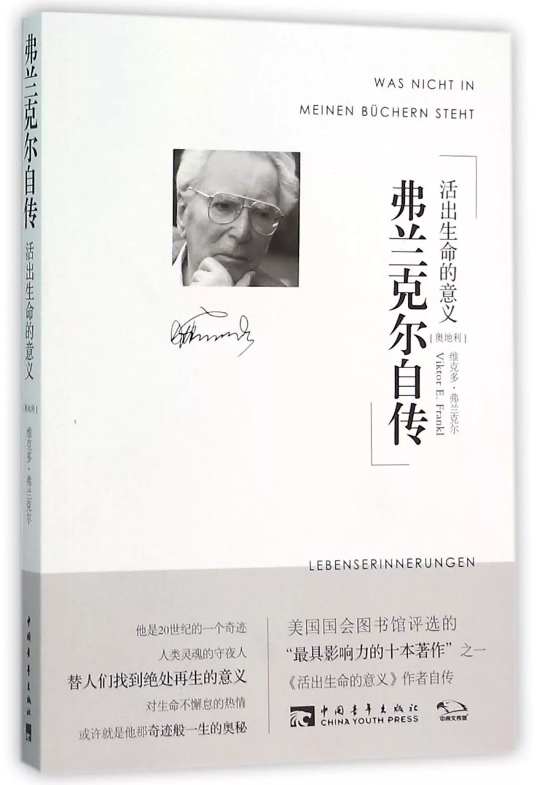

TI9
上周看了一整周的TI9的比赛，基本没干什么正事。看完比赛真的觉得有点难受，特别是周五周六两个晚上，中国队的比赛都输了，还输得不太漂亮。
现在TI9也结束好几天了，我也就趁着写文章的机会纸上谈兵一下，发发牢骚。

看完比赛，总体感觉中国队普遍心理素质不是特别好，尤其是最后两天的比赛，LGD打OG和Liquid都是1:2输的。输的过程也都差不多，第一把顺风顺水，第二把有点艰难地输了，第三把就感觉选手的心态都爆炸了，打出来的东西都变形了，一些平时不太会犯的错误都开始出现了。

其实一开始中国队在小组赛的时候，打出来的比赛都蛮不错的。就算真的打输，也都输得漂亮。也可能是到了淘汰赛，对手更加厉害，也都拿出来一些压箱底的东西，中国队接不住吧。
当然在国内这么大的舆论压力下，要想在这样关键的大赛中保持一个正常的心态真的不容易。我觉得我们真的应该学学OG，给队员提供一些心理咨询的配套支持。这个东西就好像食宿之类的后勤保障，可以让队员在关键的时候仍然可以正常地发挥。

中国队不是说骚套路完全不会，只是大赛的时候，在这么大的压力下不敢拿出来，或者就算拿出来了，也因为压力太大而打法上求稳，不敢做大的体系层面的变化。
LGD对Liquid的最后一把拿了sf，赛后因为输了，被喷成了筛子。当年的CDEC的中单两仪落也是的，输了以后被喷成筛子，可见选手承受的舆论压力有多大。从这一点上来说，比赛期间把选手与外界舆论隔绝也许也是一个不错的选择。
心态的调节
其实心理压力大的时候，调节真的很重要，同时在压力大的时候调节也真的不太容易。
我个人感觉体育活动和冥想都会蛮有帮助的，尤其是体育活动过程中，其实就不太会去想很多烦心的事情了。
另一方面有的时候压力真的太大的话，完全放弃一段时间也是不错的选择。最近在读弗兰克尔自传《活出生命的意义》这本书，里面提到了一个叫“矛盾意向法”的治疗方法，就是类似于这种“完全放弃”的治疗方法。

什么叫完全放弃呢？书中举了一个特别好的例子。弗兰克尔曾经碰到过一个病人得了广场恐惧症，也就是说这个病人非常害怕去广场上。弗兰克尔就建议他说，你一感到害怕，就对自己说：我不是害怕在马路上跌倒吗？好极了，这正是我希望的，我跌倒了，马路上的人都围了上来，还不止这些，我的头撞破了，心脏停止跳动，诸如此类。
总之，走得累了，走不动了，就趴一会儿，甚至躲起来睡一会儿，都是不错的选择。